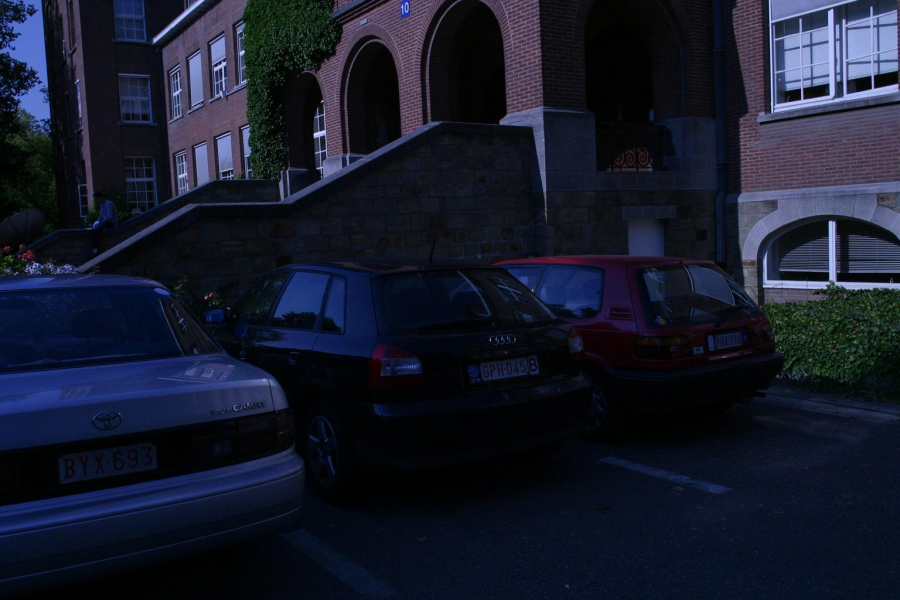
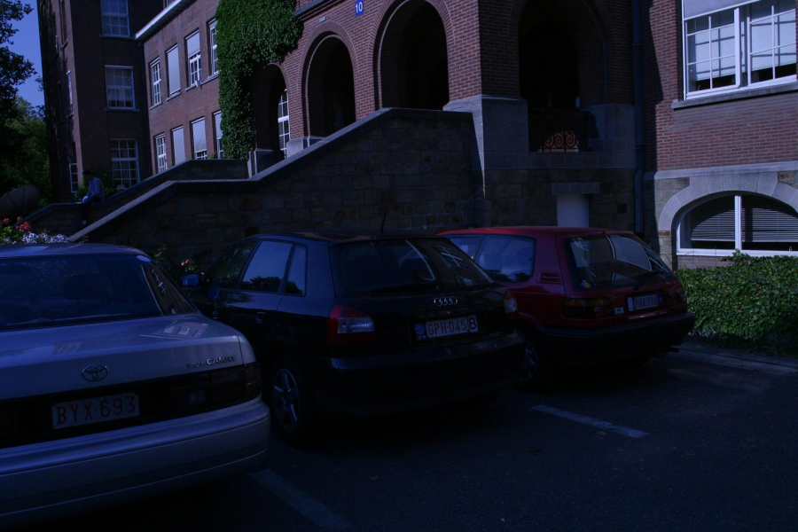
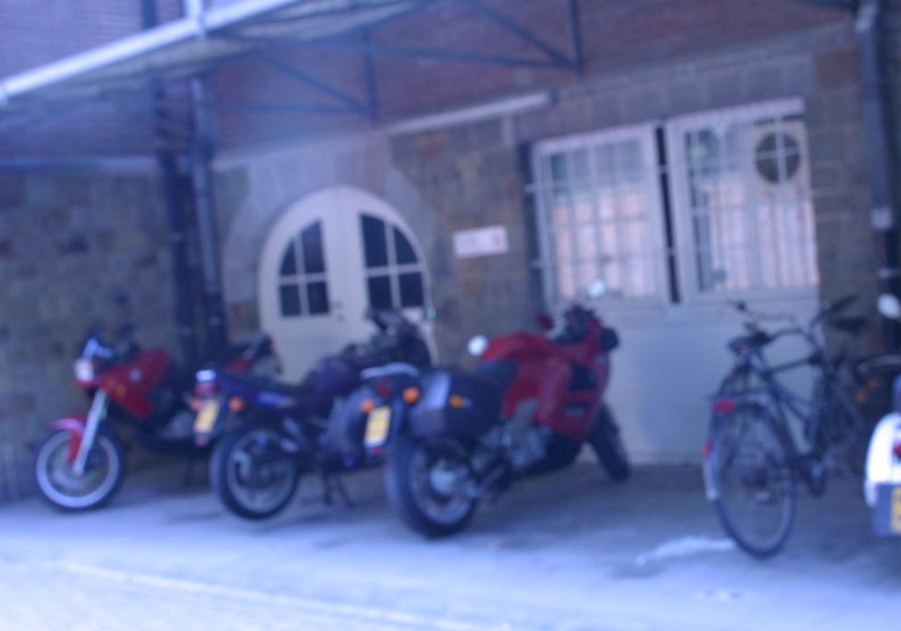
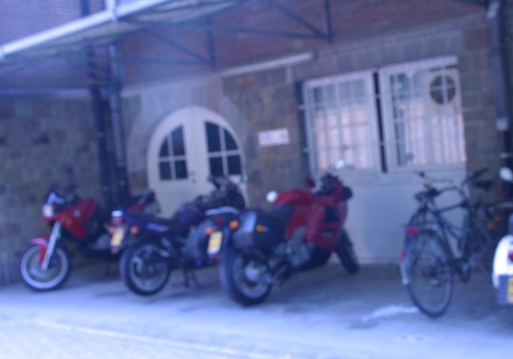

Line Segment Matching: A Benchmark
Kai Li, Jian Yao, Mengsheng Lu, Heng Yuan, Teng Wu, Yinxuan Li
School of Remote Sensing and Information Engineering, Wuhan University, Wuhan, Hubei, P.R.China
{kaili, jian.yao}@whu.edu.cn
Motivations
The proposed benchmark dataset targets to solve two problems in the field of line segment matching. The first is how to evaluate different line segment matching algorithms in an unbiased way. Existing methods were all evaluated using images and line segment detectors selected by the authors themselves, which makes the authors' claims about their algorithms superiorities vulnerable to be suspect. The second is that there is no reliably automatic way to access the correctness of obtained line segment matches. It is often the case that a line segment matcher finds hundreds or even thousands of matches from two images. Obviously, checking the matches one by one through visual inspection is a very tedious and error-prone work. The proposed benchmark dataset solves these two problems by carefully selecting experimental images and line segment detectors, and providing the ground truth matches among line segments extracted from the selected images. Since the input images and line segments for different matchers are limited to some representative ones, the matching results shall bring in convincing conclusions about the relative performances of different matchers. Besides, the benchmark provides the ground truth matches among extracted line segments, which makes it easy to access the correctness of line segment matches automatically. One just needs to compare the line segment matches obtained by a matcher from two images with the ground truth matches identified before in the two images, a detailed report about the obtained line segment matches can generated reliably and automatically.
Benchmark Dataset
After a comprehensive consideration of factors that affect the performance of LSM methods, namely, the transformations between images, the types of scenes captured, the methods used for extracting line segments and the richness of straight line features, we finally selected the 15 pairs of images shown in Figure 5 and two state-of-the-art line segment detection methods, LSD and EDLines, for establishing the benchmark. Thus, the benchmark provides the ground truth matches among 30 pairs of line segment sets. All these images were once used in the literature and contains all common image transformations, namely, illumination change, rotation change, JPEG compression, image blur, scale change and viewpoint change. For some of them, we selected multiple pairs of images. Specially, for viewpoint change, we selected image pairs both with short baselines and wide baselines. Besides, the benchmark contains several image pairs characterized by the special scenes captured: poorly-textured scenes and occlusion scenes. Also, both images capturing planar scenes and non-planar scenes are included to avoid the benchmark being biased towards only planar scenes.
 

|


|


|
| (a) Light change | (b) Light change | (c) Rotation change |


|

|
 

|
| (d) Rotation change | (e) JPEG compression | (f) Image blur |


|


|


|
| (g) Poorly-textured scene | (h) Poorly-textured scene | (i) Occlusion scene |


|


|


|
| (j) Scale change | (k) Scale and rotation change | (l) Viewpoint change |


|


|


|
| (m) Viewpoint change and poorly textured scene | (n) Viewpoint change (wide-baseline) | (o) Viewpoint change (wide-baseline) |
Dataset and Source Codes
- Benchmark dataset and evaluation codes: [github]
- Source codes or executable binaries of some line segment matchers (collected by us, please cite respective papers when using them):
| MSLD | Z. Wang, F. Wu, and Z. Hu. MSLD: A robust descriptor for line matching. Pattern Recognition, 42(5):941–953, 2009. |
| SMSLD | B. Verhagen, R. Timofte, and L. Van Gool. Scale-invariant line descriptors for wide baseline matching. In WACV, 2014. |
| LS | L. Wang, U. Neumann, and S. You. Wide-baseline image matching using line signatures. In ICCV, 2009. |
| LPI | B. Fan, F. Wu, and Z. Hu. Robust line matching through linepoint invariants. Pattern Recognition, 45(2):794–805, 2012. |
| LBD | L. Zhang and R. Koch. An efficient and robust line segment matching approach based on LBD descriptor and pairwise geometric consistency. Journal of Visual Communication and Image Representation, 24(7):794-805, 2013. |
| LJL | K. Li, J. Yao, X .Lu, L. Li, and Z. Zhang. Hierarchical line matching based on line-junction-line structure descriptor and local homography estimation. Neurocomputing, 184, 207-220，2016. |
| VJ | K. Li, J. Yao, M. Xia, and L. Li. Joint point and line segment matching on wide-baseline stereo images. In WACV 2016. |